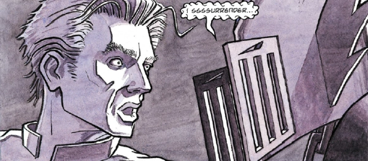

A short sequence of flashback tales demonstrating some of the deprivations of the four Dark Judges during Necropolis.
Art by Jim O'Ready
| Story Title | Parts | Pages | w indicates a wraparound coverCovers | Year(s) | Issues | Writer | Artist | Colourist | Letterer |
|---|---|---|---|---|---|---|---|---|---|
Linked to: The Dark Judges Judge Fear Featuring Judge Fear & Judge Mortis.Sleeping Enemy | 1 | 7 | Jason Brashill 1 | 1995 | Reprints: M355 (supplement)M2.78 | Si Spencer | Jim O'Ready | <-- | Gordon Robson |
| …Creeping Things | 1 | 7 | 0 | 1995 | Reprints: M355 (supplement)M2.79 | Si Spencer | Pete Venters | <-- | Gordon Robson |
Linked to: The Dark Judges Judge Death That Perfect Skin | 1 | 7 | 0 | 1995 | Reprints: M355 (supplement)M2.80 | Si Spencer | Simon Davis | <-- | Gordon Robson |
Linked to: The Dark Judges Judge Death The Reign of Fear | 1 | 7 | 0 | 1995 | Reprints: M355 (supplement)M2.81 | Si Spencer | Stuart Mack | <-- | Gordon Robson |
| Blood | 1 | 7 | 0 | 1995 | Reprints: M355 (supplement)M2.82 | Si Spencer | Jim Vickers | <-- | Gordon Robson |
Linked to Judge DeathSome Passed Over | 1 | 7 | 0 | 1995 | Reprints: M355 (supplement)M2.83 | Si Spencer | Jim O'Ready | <-- | Gordon Robson |
| year | episodes | pages |
| 1985 | 0 | 0 |
| 1986 | 0 | 0 |
| 1987 | 0 | 0 |
| 1988 | 0 | 0 |
| 1989 | 0 | 0 |
| 1990 | 0 | 0 |
| 1991 | 0 | 0 |
| 1992 | 0 | 0 |
| 1993 | 0 | 0 |
| 1994 | 0 | 0 |
| 1995 | 6 | 42 |
| 1996 | 0 | 0 |
| 1997 | 0 | 0 |
| 1998 | 0 | 0 |
| 1999 | 0 | 0 |
| 2000 | 0 | 0 |
| 2001 | 0 | 0 |
| 2002 | 0 | 0 |
| 2003 | 0 | 0 |
| 2004 | 0 | 0 |
| 2005 | 0 | 0 |